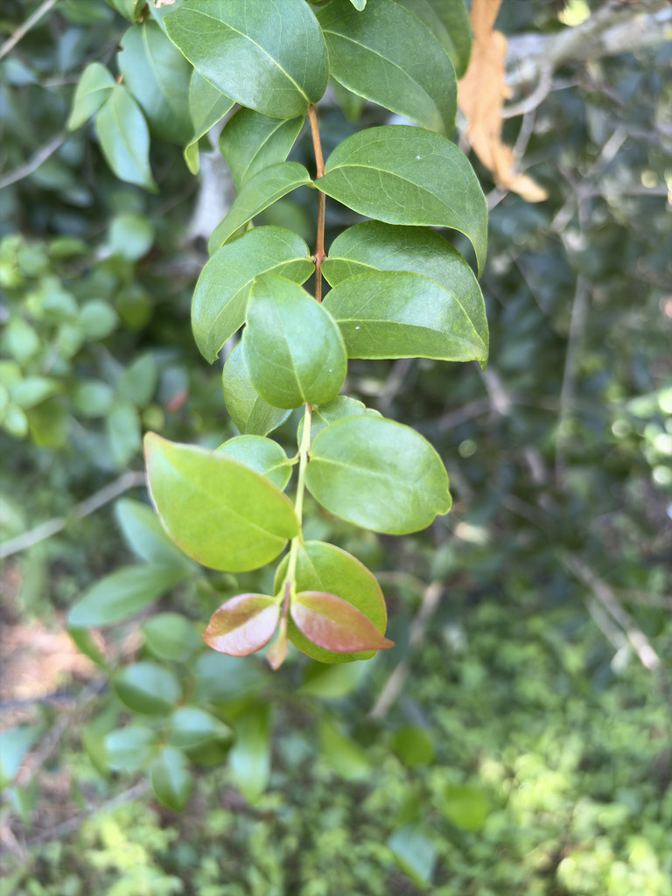

- The fruit ripens in stages you can watch in real time: the same shrub can carry green, orange, bright red, and deep maroon berries simultaneously, each a different degree of ripeness on its way to almost black. The darker the fruit, the sweeter and less resinous the flavor — the fully purple stage is what most people agree tastes best.
- A Surinam cherry fruit goes from flower to ripe berry in about three weeks — unusually fast for a woody plant. That rapid turnover means a single shrub can produce multiple crops in a year.
- The seeds are strongly resinous and genuinely unpleasant to eat — some people have described the flavor of orange or red varieties as turpentine-like. That character comes from volatile essential oils, including compounds also found in citronella, that saturate the leaves and fruit alike.
- This plant's success as an invasive comes down almost entirely to birds. They eat the fruit enthusiastically, pass the seeds intact, and deposit them across the landscape — which is how Surinam cherry moves from a garden hedge into a hammock it was never planted near.
Surinam cherry is native to the Atlantic Forest region of Brazil and adjacent parts of South America, with the wild range extending roughly from southern Brazil through Paraguay and Uruguay. Flora of North America notes that the precise native range is not fully settled, but southern Brazil is the most widely cited origin.
Its path to Florida was circuitous. Portuguese explorers carried seed from Brazil to India and then to southern Europe, and the plant traveled onward from there into the Caribbean and eventually to Florida, where it was documented in cultivation before 1931.
It was planted extensively across central and south Florida as a hedge and for its edible fruit, and had escaped into natural areas by the early 1970s.
- Surinam cherry belongs to the family Myrtaceae — the same family that claims guava, allspice, eucalyptus, and Florida's own native stoppers (also Eugenia species).
- It is a closer relative of the white stopper (Eugenia axillaris) and Spanish stopper (Eugenia foetida) than it might appear at first glance, sharing the opposite glossy leaves, white pom-pom flowers, and bird-dispersed berries typical of the group.
- The leaves are packed with aromatic essential oils — citronella, cineole, and various sesquiterpenes among them. Crush a leaf and the smell is immediate and distinctive: citrusy, resinous, and slightly spicy.
- That same chemistry is part of what makes the unripe fruit and the seeds so strongly flavored, and it can irritate the respiratory passages of sensitive individuals when the plant is pruned heavily.
- In Florida, Surinam cherry seedlings have been shown to outperform native Eugenia seedlings in studies on growth and establishment — which helps explain why it spreads so effectively once birds drop seeds into hammock understory. It tolerates shade well enough to germinate and grow beneath a closed canopy, a trait most invasive plants don't share.
The fruit is the main wildlife draw, and birds are enthusiastic about it. Mockingbirds, robins, catbirds, and other fruit-eating species take the berries readily, and it is precisely this relationship that makes the plant such an effective invader — seeds pass through the digestive tract intact and are deposited wherever a bird happens to land.
For birds, it is a reliable food source; for native hammocks, that same efficiency is the problem.
The small white flowers attract bees and other generalist pollinators when in bloom. No Florida butterfly has been documented using Eugenia uniflora as a larval host plant, and the park's best butterfly habitat lies among its native plantings. The dense evergreen canopy does provide year-round cover for small birds and lizards.
Propagation is by seed or cuttings. The plant is hermaphroditic — each flower carries both male and female parts — and is pollinated by insects. Seeds remain viable for only about a month and germinate within three to four weeks. Seedlings grow slowly at first; fruiting can begin as early as two years after germination, though some plants take considerably longer.
Small, white, and fragrant — about half an inch across — with a conspicuous brush of 50 or more white stamens tipped with pale yellow anthers. Flowers appear singly or in clusters of two to three at the leaf axils. Bloom is heaviest in spring but can occur at other times of year, particularly in fall.
A fleshy, juicy berry up to about 1.5 inches wide, distinctively pumpkin-shaped with seven to eight prominent ribs. Fruit begins green, passes through yellow and orange, then ripens to bright red, deep scarlet, or very dark maroon approaching black. The flesh is orange-red, juicy, and sweet-acid; each fruit contains one large seed, occasionally two or three smaller ones.
Opposite, oval to lance-shaped, one to three inches long, with a smooth margin and a glossy dark green surface. New growth emerges a striking bronze to red before maturing to green. The leaves are aromatic — notably so when crushed — from the essential oils concentrated in the tissue.
Smooth, brown to gray, mottled in texture. The plant typically grows as a multibranched shrub in Florida, occasionally developing a more tree-like single trunk with age. It branches densely from the base and can be sheared to almost any shape, which is why it was so widely planted as a formal hedge.
The ribbed fruit in multiple colors at once is the most distinctive field mark — no other common Florida shrub carries green, orange, red, and near-black berries on the same branch simultaneously. Look also for the opposite, shiny leaves with their bronze-red new growth at the branch tips, and pinch a leaf to check for the resinous, citrusy smell.
In bloom, the small white flowers are recognizable by their dense brush of stamens. The densely branched, fine-textured form and smooth mottled bark are consistent year-round.
Skip the seeds — they are heavily resinous and should not be eaten. The ripe flesh of the fruit is edible and long used in jams, juices, and eaten fresh; chilling the seeded fruit for a few hours reduces the resinous edge. Orange and red fruits tend to be more strongly flavored than the deep purple stage, which most people find the most agreeable.
People who are sensitive to strong plant aromatics may find that handling or pruning the plant in quantity irritates the nose and throat — the essential oils in the leaves are potent. No serious toxicity to people or dogs has been documented from the fruit flesh; the resinous seeds are the part to avoid.
The park maintains this specimen for educational and identification purposes — visitors can learn to recognize an important invasive species in a controlled setting. Palma Sola Botanical Park does not recommend planting Eugenia uniflora, and UF/IFAS Extension actively discourages it across Florida.
Several native Eugenia species — the white stopper (Eugenia axillaris), Spanish stopper (Eugenia foetida), and red stopper (Eugenia rhombea) — offer similar small-shrub form and wildlife value without the invasive risk. They are the recommended alternatives for Florida landscapes.


- © Ruby Meador (CC-BY-NC), via iNaturalist